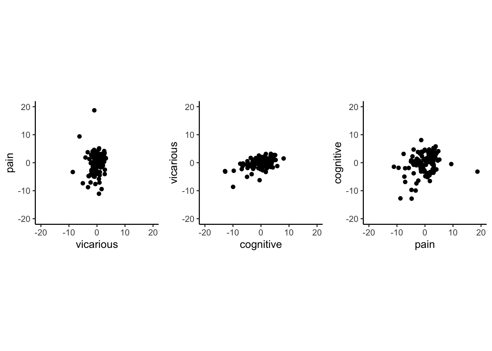
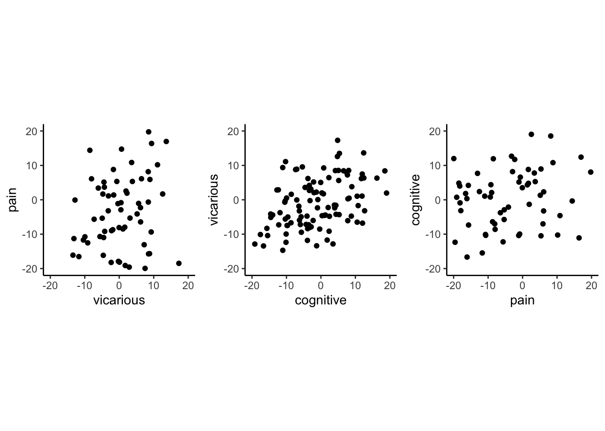

3 beh :: outcome ~ cue
What is the purpose of this notebook?
Here, I plot the outcome ratings as a function of cue.
- Main model:
lmer(outcome_rating ~ cue) - Main question: do outcome ratings differ as a function of cue type?
- If there is a main effect of cue on outcome ratings, does this cue effect differ depending on task type?
- IV: cue (high / low)
- DV: outcome rating
FIX: plot statistics in random effect plot - what is broken?
# parameters _____________________________________ # nolint
subject_varkey <- "src_subject_id"
iv <- "param_cue_type"; iv_keyword <- "cue"; dv <- "event04_actual_angle"; dv_keyword <- "outcome"
xlab <- ""; ylim = c(0,180); ylab <- "ratings (degree)"
subject <- "subject"
exclude <- "sub-0001|sub-0003|sub-0004|sub-0005|sub-0025|sub-0999"
subjectwise_mean <- "mean_per_sub"; group_mean <- "mean_per_sub_norm_mean"; se <- "se"
color_scheme <- if (any(startsWith(dv_keyword, c("expect", "Expect")))) {
color_scheme <- c("#1B9E77", "#D95F02")
} else {
color_scheme <- c("#4575B4", "#D73027")
}
print_lmer_output <- FALSE
ggtitle_phrase <- " - Outcome Rating (degree)"
analysis_dir <- file.path(main_dir, "analysis", "mixedeffect", "model03_iv-cue_dv-outcome", as.character(Sys.Date()))
dir.create(analysis_dir, showWarnings = FALSE, recursive = TRUE)
3.4 Individual differences analysis: random cue effects
Using the random effects from the mixed effects model, I’m plotting the random effect of cue types per task.
[ INSERT DESCRIPTION ]

Note:
* Pain: Warning: Removed 2 rows containing non-finite values (stat_cor()).
* Vicarious: Warning: Removed 1 rows containing non-finite values (stat_cor()).
* Cognitive: Warning: Removed 2 rows containing non-finite values (stat_cor()).
3.5 Individual differences analysis 2: random intercept + random slopes of cue effect
based on Tor’s suggestion, plotting the random efects with the random intercepts as well. not just the cue effects

Note:
* Pain: Warning: Removed 49 rows containing non-finite values (stat_cor()).
* Vicarious: Removed 8 rows containing non-finite values (stat_cor()).
* Cognitive: Removed 52 rows containing non-finite values (stat_cor()).